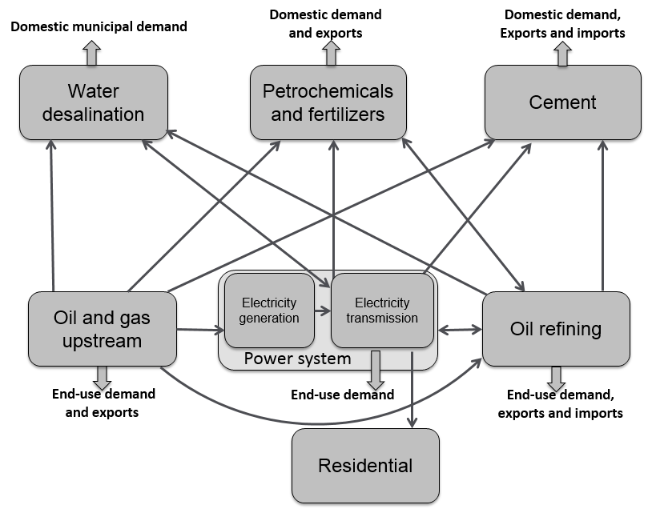
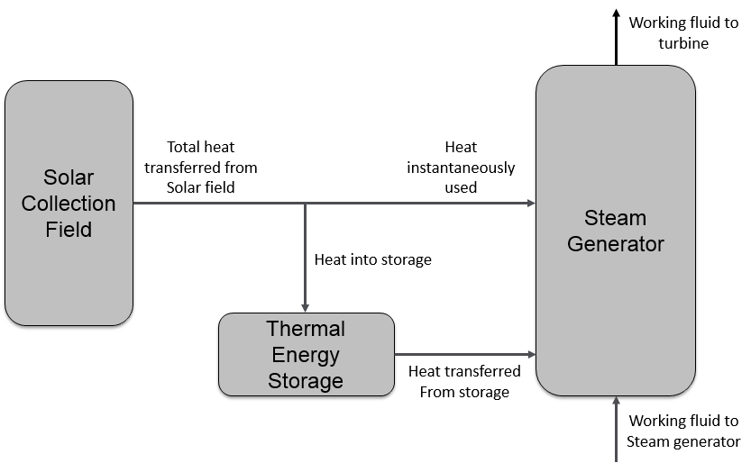
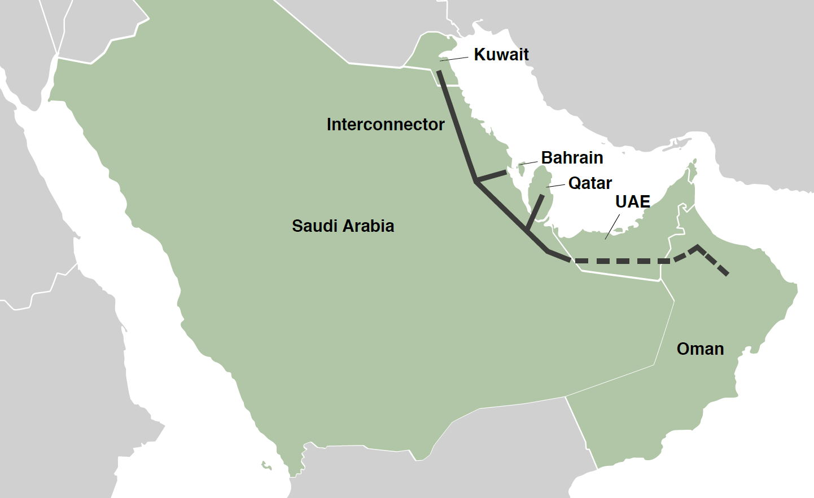
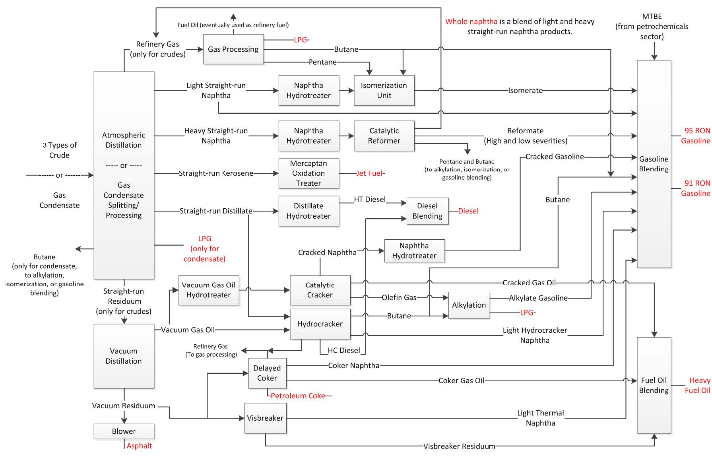
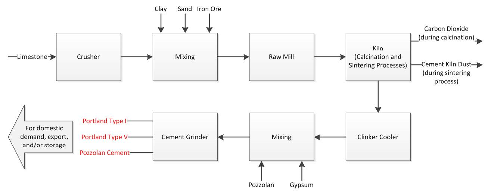

Overview
KEM has been developed to study the role of subsidy reforms of the energy-intensive sectors mainly in Saudi Arabia and the GCC countries. These are electric power and transmission, petrochemicals, refining, water desalination, oil and gas upstream, and cement sectors. Petrochemical, refining, and cement sectors have been calibrated only for Saudi Arabia; meanwhile, the rest of the sectors have been calibrated for all the GCC countries. Each sector is contained within its own sub-model and acts as an agent that makes decisions on fuel usage, investment and technology to minimize its cost or maximize profit.
The development of KEM is a mixed-complementarity problem (MCP) which allows the user to capture the non-market features resulting in prices that are different from the marginal cost. The MCP formulation allows the model to analyze policy options for redesigning of the pricing structure in the energy sector, while inducing conservation and optimal technological choices. Also, the model has been decomposed into several sub-models (sectors); each sector represents a major part of the economy. Every sector has its own parameters, variables, and equations which are included in the final model only if the sector is integrated. On the other hand, if the sector is excluded, its cross-cutting activities are set to a baseline solution.
Model Architecture
KEM consists of seven sectors (Upstream Oil and Gas, Power Generation, Power Transmission, Water Desalination, Refinery, Petrochemical, and Cement); and each sector has been formulated as a standalone linear program with objective function includes the endogenous/exogenous cost/revenue including the cross-cutting activities among the sectors with the specified inter-sector prices. This ease any further development of KEM since each sector is contained within itself, and the final model is a concatenation of all the sectoral sub-models.
The optimization of each sector is either to minimize its total cost or maximizing its total profit by changing the sectoral behavior which can be affected by the inter-sector transfer prices; these prices include marginal cost, quasi-market, administered, and capped prices. Since the domestic prices in the GCC countries are regulated, the development of all the sub-models have been done as a price taker.
Every sector can be run separately, taking exogenous prices for input used in the sector and exogenous quantities for output demanded by other sectors; the flows among the sectors are shown in figure 1.
Figure 1: KEM's sectors and their interactions
KEM has been restructured (code refactoring) to improve its nonfunctional attribute and the source-code maintainability. The refactoring includes isolating the sets, parameters, variables, and equations from each-other. The refactoring is not just limited to the model source-code, but also includes a refactoring for the model directory, explained in (Directory Structure).
KEM splits the GCC countries into individual countries and single/multiple regions. The Kingdom has been split into four regions (Center, East, South and West), the United Arab Emirates has been also split into four regions (Abu Dhabi, Dubai, Sharjah, and the Federal Electricity and Water Authority, which encompasses the remaining emirates), Oman, for simplicity, was considered as a single region even though it has three electricity systems, and the rest of the GCC countries (Bahrain, Kuwait and Qatar) are represented as individual regions due to their small size.
Sectors
Having a well restructured model facilitates the representation of each sector as a standalone model. In every sector, except Upstream, investment and production decisions are modeled. For every available technology and their vintages, the model considers the aggregated capacity by region. Each sub-model is modeled either as cost-minimization or profit maximization agent: Power generation and transmission, and Water are cost-minimization, and Upstream, Refinery, Petrochemical, and cement are profit-maximization.
The oil and gas production of the GCC countries is exogenously projected with available supplies at administered prices and pipeline structure that minimizes the cost of meeting regional demands through pipeline infrastructure. It is modeled as a profit maximization agent because it can export various crude oil grades at world market prices.
Power Generation
The electricity generation has been modeled to fulfilled the chronological load curves rather than load duration curves to represent the demand of electricity. To maintain model tractability, an hourly load curve is divided up into 8 load segments, with weekdays distinguished from weekends. The load curve is also broken up into three seasons: winter, summer, with the fall and spring seasons combined into a single season. This generates 6 load curves per region.
The planning reserve margin in the model requires that the model has enough reliable capacity to exceed the expected hourly peak load by 10 percent. This is a default setting and may be changed by the user. If the existing capacity at any point produces less than the required margin, additional capacity that contributes to it would have to be built. Renewable technologies are generally not able to contribute to the margin.
Power plant technologies currently represented are listed in table 1 below. They include plants that are already in place and prospective technologies in which the sector can invest. The conversion from open-cycle gas turbines (GT) to combined-cycle (CC) plants is solely an activity, and the resulting converted CC plant may have different operational characteristics than a new investment in a CC power plant. Thermal plants are characterized by heat rates (or net thermal efficiency in percent), variable and fixed operation and maintenance costs, ramping costs and capital costs in the case for new investment.
Steam plants with flue gas desulfurization exhibit slightly different operating characteristics when compared with those without. While we generally restrict the upper bound of HFO use in power generation to the values observed in 2015, this restriction is lifted for plants with desulfurization units. In addition, the increased self-consumption of electricity due to the operation of a desulfurization unit results in lower thermal efficiency for the plant.
| Type of Plants |
|---|
| Oil- or gas-fired steam |
| Oil-fired steam plants with desulfurization |
| Supercritical coal-fired steam |
| Open-cycle gas turbine |
| Combined-cycle plants |
| Conversion of open-cycle GT to CC |
| Photovoltaic |
| CSP with thermal energy storage |
| Nuclear |
| On-shore wind |
Table 1: Power plant technologies.
The representation of CSP in the current version of KEM is limited to parabolic trough technology with molten salt thermal energy storage. The storage mechanism allows for flexible settings by the user. We can include one, two or however many hours of storage. Figure 2 illustrates the approach taken to model the operating decisions of a CSP plant. Because of irreversiblilities such as friction effects, we consider a loss in heat between the point of reception and either the storage device or the steam generator; heat transferred out of the solar field may either be used to provide instantaneous heat to the steam generator or be stored for use when it is needed. Using direct normal irradiation (DNI) measurements, the amount of direct solar irradiation on the aperture plane of the collectors is first calculated to determine the rate of energy transfer from the solar field.
Figure 2: Heat flows in the CSP plant with thermal storage.
Other power generation technologies included in KEM for Saudi Arabia are photovoltaics (PV) and onshore wind turbines. The power generated by these technologies is generally dependent on the availability of solar radiation and wind speeds.
For PV, we have estimated the power produced for up to 50 GW per region using the regional DNI. Then the model linearly interpolates between 0 GW and 50 GW for existing and newly-built capacity. The representation does not include electricity storage, which would shift the load curve differently. PV also degrade over time as a result of the thermal stresses imposed by cycling through the days; they have been found to degrade faster in harsher climates by Jordan and Kurtz (2012), like that experienced in most of GCC. We have included the degradation of PV panels over its life, whether it is run as a single-year static model or multi-period.
For wind turbines, the rate of energy transfer with wind is proportional to turbine speed cubed. Wind turbines are designed to operate only if the wind is between specified cut-in and cutoff speeds, and their power output plateaus once their rated wind speed is observed. For a typical turbine, we consider a cut-in speed of 3 meters per second, a cutoff speed of 25 meters per second and a rated speed of 13 meters per second (Al-Abbadi, 2005).
Due to the intermittent nature of solar radiation availability and wind speeds, the additional costs of operating spinning reserves are also incorporated when operating their capacity. For a given generation during a load segment, the model imposes 20 percent of the generation (in GW) to be met by up-spinning reserves. These reserves are subtracted from the capacity that can be operated and include additional fuel consumption costs that are a fraction of normal consumption costs.
Power Transmission
The transmission system operator (TSO) is treated as a separate entity from the generation sector. It is linked with the electricity generators and satisfies the power demands in the economy. The electricity transmission has been modeled as direct current optimal power flow instead of alternating current optimal power flow in order to reduce the computational complexity. Also, the model abides by the physical laws, such as Kirchhoff’s current law, that ultimately result in energy conservation.
The transmission module minimizes the total cost of the transmission system. This includes any investment, fixed and variable operation and maintenance costs, and electricity purchased from the generators. The electricity is traded at marginal cost of supply between generators and TSOs. If a country in the sector has more than one region, its regions are connected through an inter-regional lines (whether an existing line or giving the sector the freedom to build one). Furthermore, the sector has also an Interconnector that connects the GCC countries with a transmission line for electricity trade.
The Interconnector consists of a main corridor with feed lines to the individual country systems, figure 3 below. The backbone does not physically run through the UAE to connect Oman to the system. Instead, the UAE’s national grid acts as a bridge to Oman’s national grid. There are multiple connection points in Saudi Arabia, but they are modeled as one connection point in the Eastern Province.
Figure 3: Map of GCC members and the GCC Interconnector (shown by the thick black lines).
Water Desalination
The water sub-model optimizes investment and production decision for desalinated water, with the production of ground water taken as exogenous. As most of the desalinated water is produced through cogeneration, the water sector also minimizes total cost of supplying power generation capacity and electric energy to the power sector. Water demand is represented as a flat demand curve, assuming that sufficient water storage is readily available.
Desalination technologies are broken down into three categories; standalone thermal desalination, Reverse Osmosis (RO), and thermal cogeneration. Standalone thermal plants include Multiple-effect distillation (MED) and multi-stage flash distillation (MSF). Standard reverse osmosis technologies are represented in three different configuration; Salt Water RO (SWRO) and Brackish Water RO (BWRO) operating off a conventional electric power source, and Hybrid SWRO (SWROhyb) with power and water supplied by a cogeneration plant. The purpose of a Hybrid SWOR plants is combining product water from the two desalination cycles, increasing the minimum concentration of impurities in the SWRO product water, and total energy use.
Cogeneration plant types include Steam Turbine Cogeneration operating MSF units (STCo) and Combined Cycle Gas Turbine Cogeneration plants operating either MED (CCCoMED) or MSF (CCCoMSF) units. These cogeneration plants supply steam to the desalination cycle using a Back pressure steam Turbine Generator (BTG) with a fixed Power to Water Ratio (PWR). These plants supply baseload power running at full capacity.
Other cogeneration plants have variable PWR’s (STCoV, CCCoVMED, CCCoVMSF). These plants use Extraction Steam Turbines (EST) to vary the amount of energy extracted from a steam turbine for desalination. Gas Turbines cogeneration plants (GTCO) are configured with a Heat Recovery Steam Generator (HRSG).
Plants that can vary their PWR may store water off peak and generate excess power during peak demand period when the price communicated by the power sector model is sufficiently high. The MCP model has been configured such that the price of electricity paid to cogeneration plants by the power sector are administered. This reflects current policies with electricity prices fixed below the marginal value. This feature of the water model can be used to assess price coordination between the power and desalination sectors that can impact overall system operation and costs.
Refinery
Refinery is a simplified version of a corporate refinery model, which aggregates capacity into one per region. The prices of crude oils observed by the refining sector are set to the marginal cost of the Upstream sector The units, process and product flows considered in the model are presented in the figure 4 below:
Figure 4: Refinery scheme used in the model.
The sub-model contains activities for building each type of unit and the ability to operate the units at different severities. It includes four primary inputs: Arabian light, Arabian medium, Arabian heavy, and gas condensate. Also, it includes nine petroleum products: two grades of gasoline, diesel, liquefied petroleum gas (LPG), jet fuel, heavy fuel oil (HFO), naphtha, petroleum coke, and asphalt. The properties of blended products are specified according to Saudi Arabian Oil Co. requirements, and the sector has the ability to purchase materials from the petrochemical industry (MTBE). Furthermore, the sub-model has the flexibility in the use of electricity during operation, power can be either generated on-site or bought from the grid.
Petrochemical
The petrochemical sector is export-oriented. The sub-model accounts for 24 products, described in the table 2 below, spanning basic and intermediate chemicals, polymers, fertilizers, and specialty chemicals. The sub-model, like the other sectors, has build and operate activities that capture the different technology choices for producing bulk chemicals. Since this is an export sector, the sub-model is highly sensitive to the price differences between the feedstock cost and world market prices. Too great a price difference leads to extremely large additions of new capacity. Given that prices are administered, the sector has been modeled as a policy decision, not one based on pure economics.
Production of petrochemicals require intricate mass balances. A feedstock, like ethane or naphtha, is initially cracked to yield several products at different mass shares. The modeled units of a process are unit of input per unit of main product. The other produced materials are named as by-products and are accounted for in the mass balance relationships. The resulting product, for example ethylene, may either be sold as is or further processed to produce other chemicals downstream. The product of that process faces the same decision tree. They mass yields of each process are calibrated from Sumitomo Chemical (2006), the Kirk-Othmer Encyclopedia of Chemical Technology (2006), Aitani (2006) and Al-Manssoor (2008).
| Input | Process Path | Output |
|---|---|---|
| Ethane | Steam Cracking | Ethylene, Propylene, and Butadiene |
| Naphtha | Steam Cracking | Ethylene, Propylene, and Butadiene |
| Propane | Steam Cracking | Ethylene, Propylene, and Butadiene |
| Propane | Dehydrogenation | Propylene |
| Ethylene | Reactor-fractionation-evaporator-distiller | Ethylene Glycol |
| Ethylene | Polymerization (low-pressure) | HDPE |
| Ethylene | Polymerization (high-pressure) | LDPE |
| Ethylene | Polymerization (low-pressure) | LLDPE |
| Ethylene | Chlorination-oxidation-pyrolysis | VCM |
| Ethylene | Alkylation-dehydrogenation (liquid-phase) | Styrene and Toluene |
| Ethylene | Alkylation-dehydrogenation (gas-phase) | Styrene and Toluene |
| VCM and Toluene | Suspension polymerization | PVC |
| VCM | Bulk polymerization | PVC |
| Styrene | Reactor-centrifuge-blending (Lummus Crest) | Polystyrene |
| Propylene | Union Carbide/Shell process | Polypropylene |
| Propylene | Himont Inc. spheripol process | Polypropylene |
| Methane | Reformer-reactor (ICI LCA process) | Ammonia |
| Methane | Desulfurization-reactor-xxchanger | Methanol |
| Methanol | Reactor-distillation-extractor (BP process) | MTBE |
| Propylene | Hydroformylation-condensation-hydrogenation | 2-EH |
| Ammonia | Reactor-crystallization-prilling | Urea |
| Ethylene | Catalytic reaction with acetic acid & palladium | Vinyl Acetate |
| Propylene | Chlorohydrin process | Propylene Oxide |
| Propylene | Epoxidation with Ethylbenzene Hydroperoxide | Propylene Oxide and Styrene |
| Propylene Oxide | Hydration | Propylene Glycol |
| Methane | Kellogg Process | Ammonia |
| Methanol | Oxidation and catalysis using Fe-Mo oxide catalyst | Formaldehyde |
| Urea and Formaldehyde | Alkaline methylolation and acid condensation | Urea-Formaldehyde Resin |
| Ammonia | DAP plant with granulation units | Diammonium phosphate(DAP) |
Table 2: Production process path
Cement
The sub-model accounts for the production of three types of cement, the production flows are depicted in the figure 5. The sub-model, which behaves as a profit-maximizing agent, is designed to meet domestic demand but may also export finished product. Furthermore, the sub-model has the ability to import either clinker or finished cement. Only dry process are used in Saudi Arabia, therefore, the sub-model considers the installation and operation of long dry kilns, kilns with preheating, and kilns with both preheating and precalcination. The sub-model also has the ability to upgrade existing long dry kilns to the more efficient technologies. Purchases from the upstream and refining sectors, the fuels considered for operating the kilns are crude oil, natural gas, diesel, and HFO. As in the refining sub-model, cement companies are able to produce electricity on-site or purchase from the grid.
Figure 5: Cement production path.
The preceding coefficients are the number of moles to achieve a chemical balance. These molar coefficients are calculated by the model based on the required mass composition of clinker for each type of cement; the clinker mass content is specified according to the standard ASTM C- 150. As shown by the chemical reactions, calcite is first dissociated to carbon dioxide and calcium oxide. The calcium oxide and the remainder of the raw mix are then reacted at a higher temperature to produce clinker. Achieving the required reaction conditions is the main driver of energy consumption during cement production. Based on van Oss (2005), the modeled cement kiln dust (CKD) output is estimated to be 17 percent by mass of total kiln output. After being cooled, the clinker is mixed with gypsum and/or pozzolan (differing mixing requirements based on cement type), and the mixture passes through the grinder to produce final cement.
Emission
Emissions of certain pollutants in all of the sectors characterized by KEM have been accounted; they are carbon dioxide (CO2), NOx, and SOx. Although the module is modeled is to minimize emissions costs, the price of emissions is set to zero by default. So by default, the objective function is always zero and therefore it is not truly being minimized; the resulting operation of the sectors in KEM is not influenced.